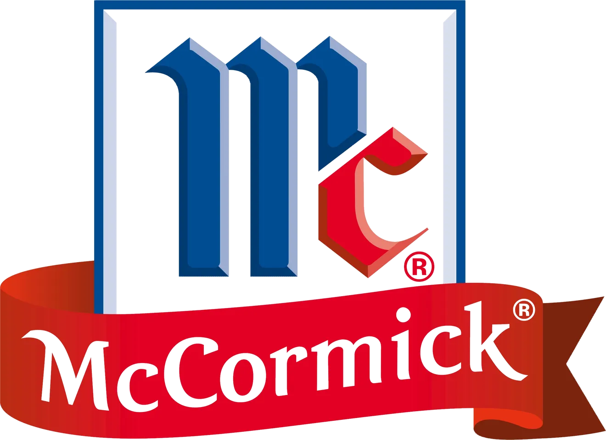
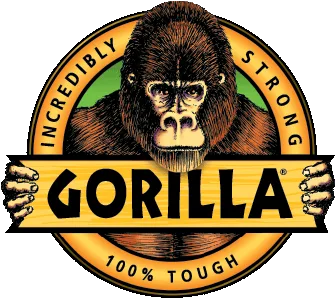

How I Brought QAD Redzone’s Biggest Partnerships to Life Across Web, Video, and Social
Cross-Channel Design for Redzone Partnerships
As Redzone partnered with leading brands in manufacturing and consumer goods, I supported the shared storytelling through design and video. This case study covers how I helped deliver consistent creative across web, video and campaign content.
- Of manufacturers I worked with through Redzone's partnerships
- Hundreds


and many moreHundreds of Plants, One Visual Story
Redzone's reach spans hundreds of manufacturing plants, from household brands like Hershey and Tyson to local family-run operations. When Redzone worked with them, and with partners like Apple or Ferrara, the slides, social posts and web pages had to tell one story.
I designed the co-branded presentations, social graphics, web features and video. With type choices, layout systems and pacing, I built repeatable frameworks that kept Redzone's voice consistent while each partner's brand stayed its own.
The partner is the hero. Redzone is the enabler.
Testimonials, Campaigns and the Apple Summit Deck
Every partner got the same care, from household names to family-run plants. That meant customer testimonials for web and social, a Women's History Month campaign built around frontline operators, and slides for a manufacturing leadership summit hosted by Apple.
“More than just customers, but community members.”
A Vending Machine Stocked by Customers
Real people and products move through the factory floor every day. To show that, I created two graphics, a 3D vending machine and a top-down conveyor line, each filled with packaging from actual Redzone customers. From PEZ to Carmex, every item stands for a frontline team.
The visuals ran in global ad placements and social activations as a playful nod to the real-world impact Redzone powers. Behind every data point is a snack, a spice jar or a chocolate bar, and behind each of those is a person doing their best work.
Stories from the Factory Floor
Behind every metric is a person. That idea shaped the video I created for Redzone, which moved the spotlight from product features to the people using the software every day.
These weren't scripted testimonials. They were real moments with real workers, from packaging leads and shift supervisors to maintenance techs, speaking in their own words about what Redzone helped them achieve. I helped concept, script and shape the visual language so they felt like short stories rather than corporate PR.
Many were captured on site or with our customer success team, so each message matched what mattered most to that plant. Some went further, spotlighting frontline transformation, generational impact or personal growth in leadership roles.
Photography at Customer Sites
For photography, I tried to tell a story in a single frame: the pride, momentum and humanity behind manufacturing.
I directed and shot original photography at customer sites and Redzone events, building a library of images that showed people in their element as well as the process. The images supported the brand's shift toward authenticity.
They were used in ad campaigns, customer success stories, web and social, and they helped shape Redzone's visual voice: “We see you. We’re with you. And your work matters.”
Hiring for a content, web, or marketing operations role? I would like to talk.
csworkportfolio@gmail.comLinkedIn